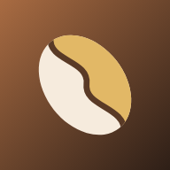

The Brew Bench has moved
It now lives at brew-bench.web.app. Update your bookmark or reinstall it from there.
You have coffees saved at this old address. Bring them across so they’re there when you arrive.
Go without them
It now lives at brew-bench.web.app. Update your bookmark or reinstall it from there.
You have coffees saved at this old address. Bring them across so they’re there when you arrive.
Go without them